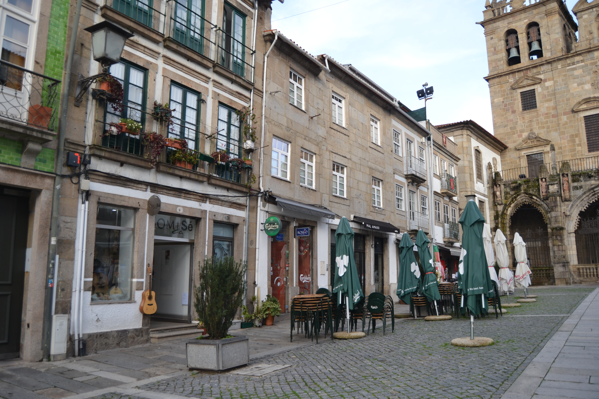
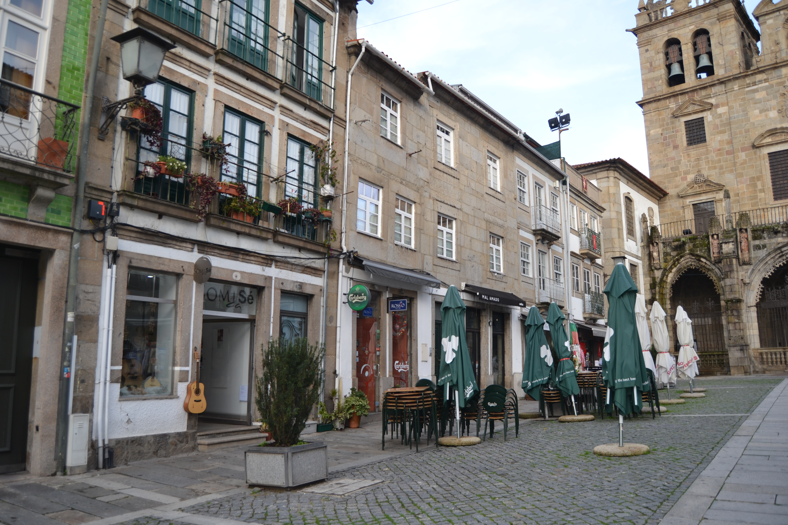

Legenda: Praça do Pão - vista norte.
Número: 4
Legenda: Praça do Pão - vista norte.

Legenda: Praça do Pão - vista sul.
Pequena praça em frente à fachada da Sé, que ao longo dos séculos foi tendo uma vida e importância diferentes, mas sempre descendente.
Aberta talvez no séc. XV, resultou da destruição da rua dos Açougues, pequena artéria que então ligava as actuais rua D. Gonçalo Pereira e D. Gualdim Pais. Nessa data instalou-se nela a Praça do Pão. No tempo de D. Diogo de Sousa construiu-se, no ângulo que esta praça faz com a rua de Maximinos, o novo edifício da Câmara Municipal, que seria destruído nos inícios do séc. XIX (No Mappa está na rua de D. Gualdim).
A partir de meados do séc. XVIII, com a mudança da vida comercial para a rua do Souto e zona exterior da porta que tem o mesmo nome, com a erecção da ala barroca do Palácio dos Arcebispos e, defrontando-a, com o novo edifício da Câmara (1755), a praça do Pão irá perdendo toda a sua importância comercial e política.
Em 1868 foi projectado o alargamento da rua de Maximinos, que rapidamente foi levado a cabo, recebendo a nova rua a largura total da praça do Pão. A partir daí deixou de fazer sentido a existência de duas artérias diferentes, sendo este largo integrado na nova rua que, desde 26/11/1925, se passou a chamar rua D. Paio Mendes.
Hoje ainda se conservam algumas das casas existentes no Mappa. Mas as mais interessantes, as dos prazos 4-6 e 13-14 já desapareceram.
Das 5 casas do lado Norte e 9 do lado Sul eram prazos do Cabido 4 e 9, respectivamente.
Número: 1
Enfiteuta: Maria Barbosa, viúva de Manuel Fernandes, alfaiate do Campo de S. Sebastião
Foro: 370 reis e 2 galinhas
Descrição: Confronta, de nascente, com a Rua do Poço.
Número: 2
Enfiteuta: José Gomes Ferraz
Foro: 480 reis e 2 galinhas
Número: 3
Enfiteuta: Félix Francisco
Foro: 480 reis e 2 galinhas
Número: 4
Enfiteuta: D. Paula Francisca de Melo, viúva de Francisco da Rocha Tinoco
Foro: 620 reis e 2 galinhas
Descrição: As casas nº 5 e 6, passaram a constituir um único prazo, em 1702. Em 1789, o nº 4 foi também integrado no mesmo prazo.
Número: 5 e 6
Enfiteuta: D. Paula Francisca de Melo, viúva de Francisco da Rocha Tinoco
Foro: 825 reis e 2 galinhas
Descrição: As casas nº 5 e 6, passaram a constituir um único prazo, em 1702. Em 1789, o nº 4 foi também integrado no mesmo prazo.
Número: 7
Enfiteuta: Padre Ambrósio Lourenço
Foro: 520 reis e 2 galinhas
Número: 8
Enfiteuta: Dr. José de Araújo
Foro: 730 reis e 2 galinhas
Descrição: O enfiteuta sucedeu a seu pai, Francisco de Araújo, o qual era filho de José de Araújo, barbeiro, e de sua mulher Ana Maria.
Número: 9
Enfiteuta: Dr. José de Araújo
Foro: 520 reis e 2 galinhas
Descrição: O enfiteuta sucedeu a seu pai, Francisco de Araújo, o qual era filho de José de Araújo, barbeiro, e de sua mulher Ana Maria.
Número: 10
Enfiteuta: Manuel da Costa Vasconcelos
Foro: 570 reis e 2 capões
Número: 11
Enfiteuta: D. Teresa Maria Ferreira Santarém
Foro: 150 reis
Descrição: Esta casa possui frontaria para a Rua de D. Gualdim. Igual pensão é paga ao Hospital de S. Marcos.
Número: 12
Enfiteuta: João Francisco, tratante
Foro: 550 reis e 2 galinhas
Descrição: A parte do poente é foreira ao Hospital de S. Marcos.
Número: 13 e 14
Enfiteuta: Dr. António da Costa
Foro: 1800 reis, 2 capões e 2 galinhas
Descrição: Encontram-se unidas num único prazo desde o ano de 1660.
Número: 15
Enfiteuta: Rev. Francisco da Costa, Abade de Tadim
Foro: 1010 reis e 4 galinhas
Descrição: No ano de 1660 foi incorporado neste prazo uma torre pertencente ao nº 16, e, no ano de 1724, um quintal do nº 2 da Rua dos Açougues Velhos.
Número: 16
Enfiteuta: José Luís. alfaiate
Foro: 260 reis e 1 capão
 
